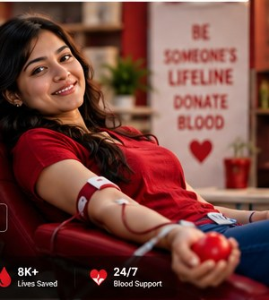
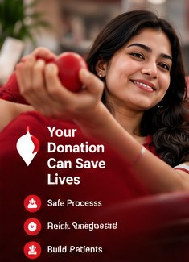
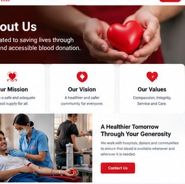
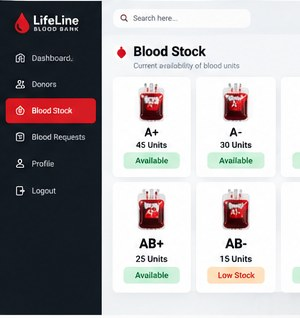
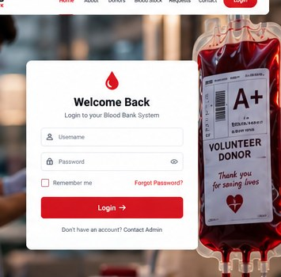

A community built on compassion
Be the reason
someone gets a
second chance.
Blood donation is a simple act with a life-changing impact. Help connect generous donors with people who need support, one donation at a time.
Every donor has the power to helpStart with a few details. Make a meaningful difference.

Give a little. Help a lot.Kindness can travel further than you think.
✚
Care starts hereDonor · Stock · Requests
Donor-first careRespectful, thoughtful experiences
Clear informationOne place for essential details
Community impactHelp people help people
HOW Sashi's Blood Bank HELPSThree ways to make
Three ways to make
a real difference.
From registering as a donor to reviewing inventory and requests, Sashi's Blood Bank brings the key steps into one welcoming place.

01 / DONATE
Become a donor
Share your details so authorized staff can contact you when appropriate.
Register your interest ↗
02 / CHECK
View blood stock
See blood-group inventory in a clear layout, connected to your database.
View availability ↗
03 / REQUEST
Request blood
Submit a request for review with the patient's and hospital's details.
Create a request ↗
YOUR NEXT STEP MATTERSBe there for someone
Be there for someone
you may never meet.
Register your interest in donating blood today.
Become a donor ↗